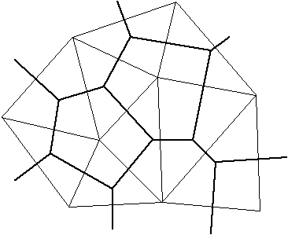
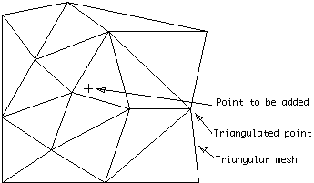
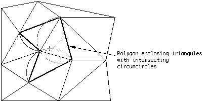
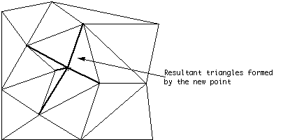
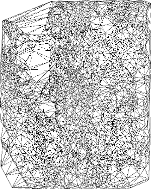
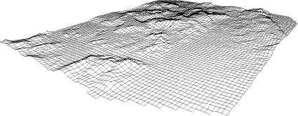

TriangulateEfficient Triangulation Algorithm Suitable for Terrain ModellingorAn Algorithm for Interpolating Irregularly-Spaced Data
Written by Paul Bourke |
|  |
|
Delauney triangles (thin lines) and associated Direchlet Tesselations (thick lines) for nine generating points. Triangle edges are perpendicular bisectors of the tile edges. Points within a tile are closer to the tile's generating point than to any other generating point. |
Such a triangulation has many desirable features. It can be shown that a convex equilateral formed by two adjacent triangles has a greater minimum internal angle than if the equilateral was formed another way. In this sense the triangles are as equilateral as possible, thin wedge shaped triangles are avoided.
The triangulation is unique (independent of the order in which the sample points are ordered) for all but trivial cases. One such case is if four points lie on the corners of a rectangle, they may be triangulated in one of two ways. These situation occur rarely in real data but if uniqueness is important then a straightforward solution is to perturb one or more of the vertices on the offending rectangle.
One particular situation where many other techniques perform poorly is when there is a mixture of regions of high and low density sampling. Triangulation based methods honour this situation by giving a large number of triangles and hence more detail to the highly sampled regions and large triangles, less detail, to the regions with a few samples.
Discontinuities are handled quite naturally. The surface can have a discontinuity as narrow as the sampling process permits, it simply results in near vertical triangular facets. Note however that unless special action is taken there can not be two samples at precisely the same point on the sample plane but with different heights. This can occur with discrete digitizers when digitizing near discontinuities. A perturbation of the sample point in the correct direction is usually a satisfactory solution to this problem.
An algorithm to implement triangulation can be quite efficient and thus suitable for areas with a large number of samples. Furthermore if further samples are obtained at a later date they can be added to the already existing triangulation without having to triangulate all the samples plus the extra samples. This makes it possible to efficiently perform a successive refinement on those areas where more detailed information is required.
The planar surfaces formed may be used directly as facets making up the surface or they may be used to produce samples on a regular grid. Given a list of triangular bounded facets it is simply a matter of finding the facet whose projection onto the sample plane encloses the point to be estimated. The intersection of the facet plane at the grid point is the estimate of the height. Another method of estimating the points on a grid is to use the Direchlet tesselations instead of the triangular facets. This avoids the cone shaped peaks about local minima and maxima which the first method tends to generate. It is intuitively more appealing because the tesselations correspond to an area of influence about the sample points. Contour maps can be generated directly from the triangular facets or from the samples distributed on a rectangular grid. Generating smooth surfaces if that is required is also generally easier if gridded data is available.
AlgorithmAt any stage of the triangulation process one has an existing triangular mesh and a sample point to add to that mesh. The process is initiated by generating a supertriangle, an artificial triangle which encompasses all the points. At the end of the triangulation process any triangles which share edges with the supertriangle are deleted from the triangle list.
|  |
|
New sample point to be added to existing triangular mesh |
All the triangles whose circumcircle encloses the point to be added are identified, the outside edges of those triangles form an enclosing polygon. (The circumcircle of a triangle is the circle which has the three vertices of the triangle lying on its circumference).
|  |
|
Triangles whose circumcircle include the new point form an enclosing polygon. |
The triangles in the enclosing polygon are deleted and new triangles are formed between the point to be added and each outside edge of the enclosing polygon.
|  |
|
New triangular polygons formed from new point to the outside edges of the enclosing polygon. |
After each point is added there is a nett gain of two triangles. Thus the total number of triangles is twice the number of sample points. (This includes the supertriangle, when the triangles sharing edges with the supertriangle are deleted at the end the exact number of triangles will be less than twice the number of vertices, the exact number depends on the sample point distribution)
The triangulation algorithm may be described in pseudo-code as follows.
subroutine triangulate
input : vertex list
output : triangle list
initialize the triangle list
determine the supertriangle
add supertriangle vertices to the end of the vertex list
add the supertriangle to the triangle list
for each sample point in the vertex list
initialize the edge buffer
for each triangle currently in the triangle list
calculate the triangle circumcircle center and radius
if the point lies in the triangle circumcircle then
add the three triangle edges to the edge buffer
remove the triangle from the triangle list
endif
endfor
delete all doubly specified edges from the edge buffer
this leaves the edges of the enclosing polygon only
add to the triangle list all triangles formed between the point
and the edges of the enclosing polygon
endfor
remove any triangles from the triangle list that use the supertriangle vertices
remove the supertriangle vertices from the vertex list
end
The above can be refined in a number of ways to make it more efficient. The most significant improvement is to presort the sample points by one coordinate, the coordinate used should be the one with the greatest range of samples. If the x axis is used for presorting then as soon as the x component of the distance from the current point to the circumcircle center is greater than the circumcircle radius, that triangle need never be considered for later points, as further points will never again be on the interior of that triangles circumcircle. With the above improvement the algorithm presented here increases with the number of points as approximately O(N^1.5).
The time taken is relatively independent of the input sample distribution, a maximum of 25% variation in execution times has been noticed for a wide range of naturally occurring distributions as well as special cases such as normal, uniform, contour and grid distributions.
The algorithm does not require a large amount of internal storage. The algorithm only requires one internal array and that is a logical array of flags for identifying those triangles that no longer need be considered. If memory is available another speed improvement is to save the circumcircle center and radius for each triangle as it is generated instead of recalculating them for each added point. It should be noted that if sufficient memory is available for the above and other speed enhancements then the increase in execution time is almost a linear function of the number of points.
An example where the triangulation algorithm described above is used to model land surfaces is given in figures 3 and 4.
|  |
|
The result of triangulating spot heights. |
|  |
|
A perspective wire frame of a gridded surface obtained from a triangulated mesh. |
References
McPhee, J., and W. W.-G. Yeh, Experimental design for groundwater modelling and management, Water Resour. Res., 42, W02408, 2006, doi:10.1029/2005WR003997
Petrie, G. and Kennie, T.J.M., Terrain modelling in Survey and Civil Engineering, Computer Aided Design, Volume 19, number 4, May 1987.
Sibson, R., A Brief History of Natural Neighbour Interpolation. In Barnett, V. Interpreting Multivariate Data, John Wiley & Sons, New York. 1981
McCullagh, M.J., Creation of Smooth Contours Over Irregularly Distributed Data Using Local Surface Patches, Geographical Analysis, Vol 13, number 1, January 1981.
Akima, N., A Method of Bivariate Interpolation and Smooth Surface Fitting for Irregularly Distributed Data Points, ACM Transactions on mathematical Software. Volume 4, number 1, 1978
Barnhill, R.E., Gregory, J.A., Polynomial Interpolation to Boundary Data on Triangles, Mathematics of Computation, Number 29. 1975
Holroyd, M.T., Bhattacharya, B.K., Automatic Contouring of Geophysical Data Using Bicubic Spline Interpolation. Dept. of Energy, Mines, and Resources Publications. Geological Survey of Canada, 1970.
Yoeli, P., Computer Executed Interpolation of Contours into Arrays of Randomly Distributed Height Points, Cartographer Journal, Volume 14, number 2, 1977.
Mirante A., and Weingarten N., The Radial Sweep Algorithm for Constructing Triangulated Irregular Networks, IEEE Computer Graphics and Applications, Vol 2, No 3, 1982
S.W.Sloan, G.T.Houlsby, An Implementation of Watson's Algorithm for Computing 2-D Delauney Triangulations, Advanced Engineering Software, Volume 6, Number 4, 1984
Green P. J., Sibson R., Computing Direchlet Tesselations in the Plane, The Computer Journal, Number 24, 1981
Ilfick, M. H., Contouring by Use of a Triangular Mesh, Cartographic Journal, Volume 16, pp 24-28, 1979
Bourke, P.D., A Contouring Subroutine, BYTE Magazine, June, 1987